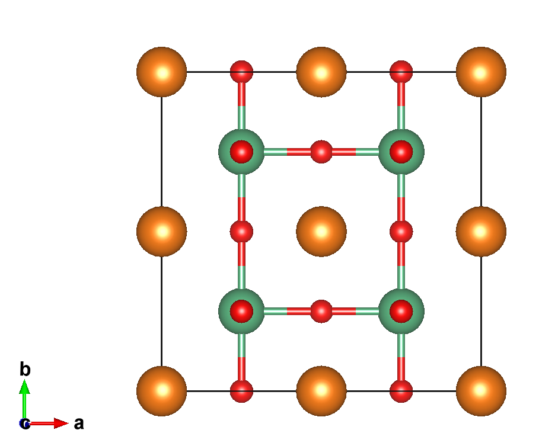
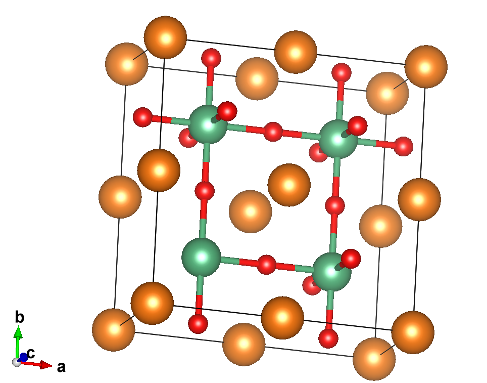
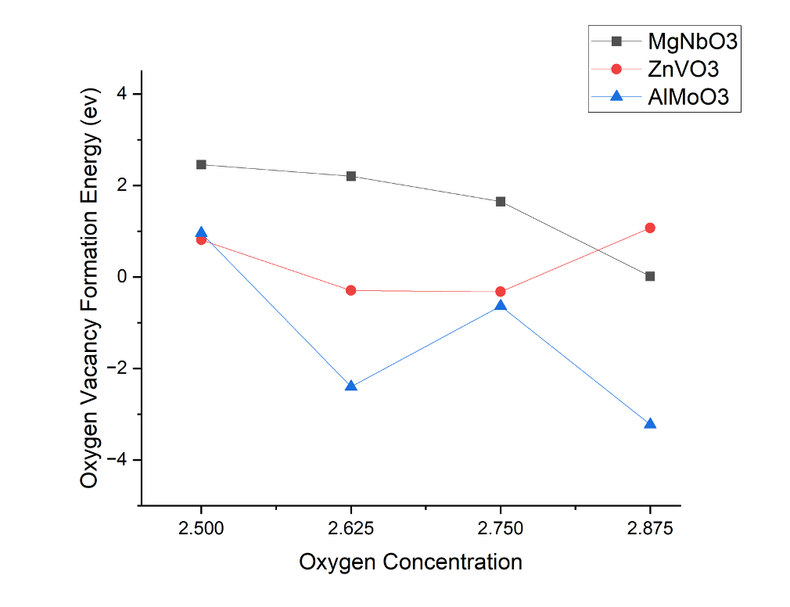
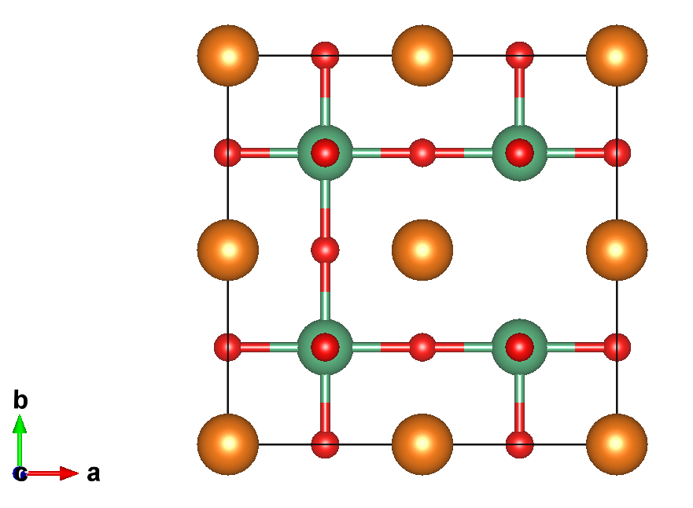
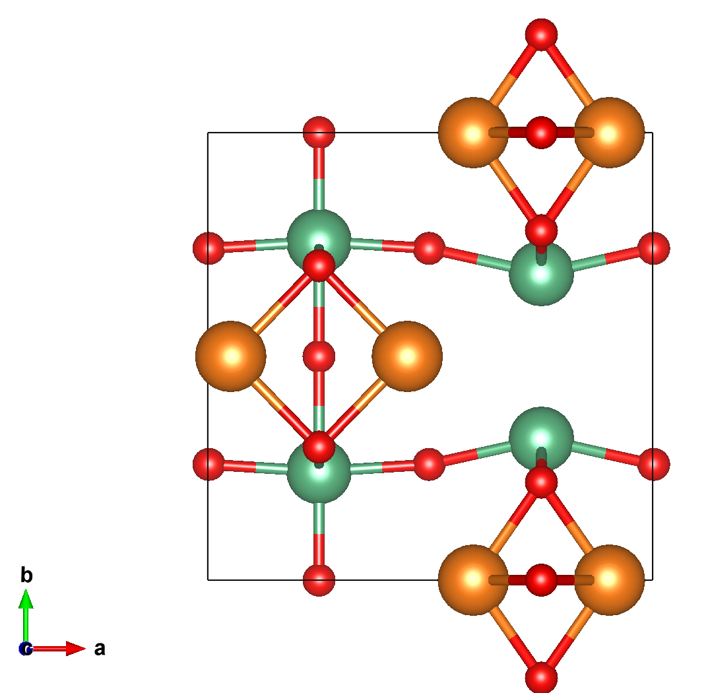
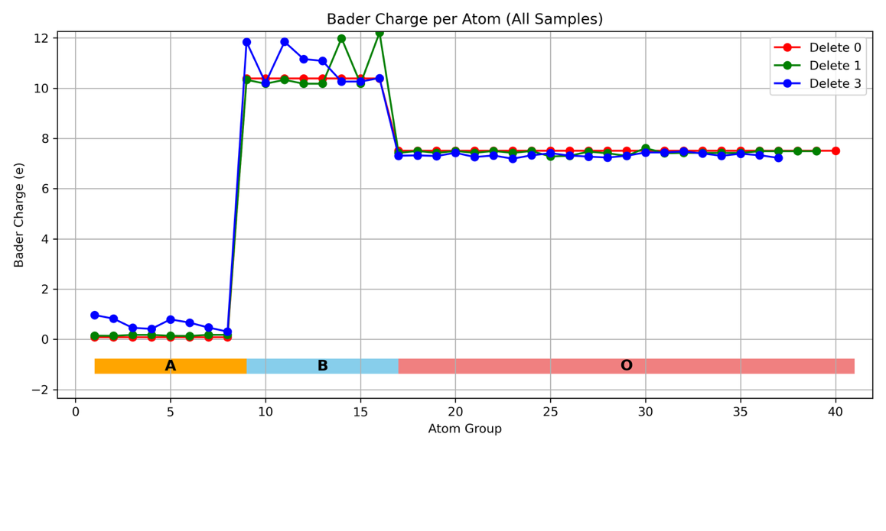
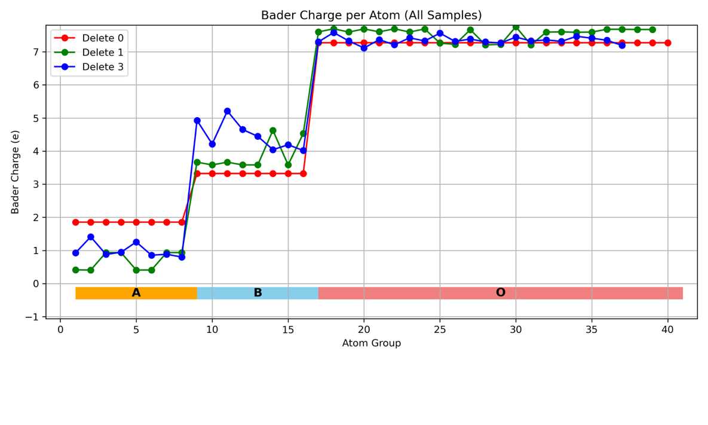
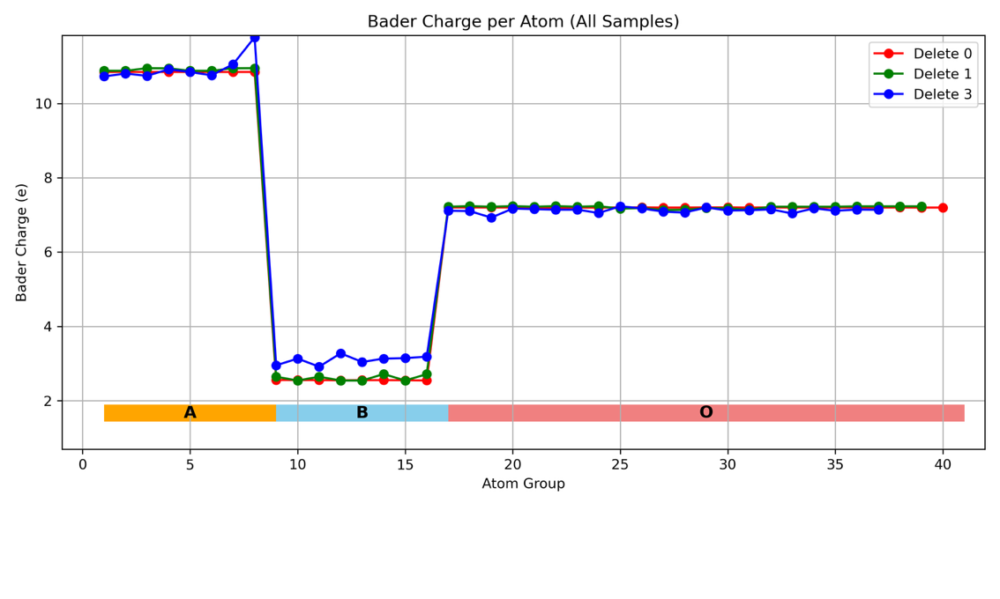

How do oxygen vacancies change an oxide’s structure and electronic response—and how can we explore the many atomic configurations behind that behavior?
At the University of Ulm, I used density functional theory (DFT) to study oxygen vacancies in perovskite oxides. After the initial structural and energetic study, I extended the work with Bader charge analysis.
Research journey
Asking where oxygen vacancies matter

An oxygen vacancy changes the local atomic environment. I investigated how oxygen-vacancy concentration and arrangement affect defect formation energetics in MgNbO₃, AlMoO₃, and ZnVO₃. The aim was to understand how their defect chemistry might be tuned for electrochemical applications.
Organizing the possible defect configurations
Starting from the parent crystal structures, I introduced oxygen vacancies at different concentrations and positions. I used symmetry analysis with pymatgen to identify distinct arrangements, reducing redundant calculations while retaining different local environments.

One vacancy arrangement 
An alternative vacancy arrangement Orange: A-site atoms · Green: B-site atoms · Red: oxygen
Comparing oxygen-vacancy energetics
After relaxing the structures with DFT, I compared how oxygen-vacancy formation energies change with oxygen content across the three oxides.

Calculated oxygen-vacancy formation energies versus oxygen content. The energy trends differ between materials. This comparison led me to examine their electronic response: how does each oxide redistribute electron density when oxygen is removed?
Structural relaxation example

Before relaxation 
After relaxation · Mg–Nb oxide Following the electrons with Bader analysis
As a follow-up to the energy comparison, I used Bader analysis to investigate the charge redistribution accompanying oxygen-vacancy formation.
I calculated charge densities for the relaxed structures and performed Bader analysis to compare atomic populations with the parent oxides. The site-resolved patterns drew my attention to the response of nearby transition-metal atoms and its dependence on the material. Some irregular charge patterns still required further checking.

Mg–Nb oxide: comparison of parent and oxygen-deficient structures. A-site, B-site, and oxygen atoms are grouped along the horizontal axis. 
Al–Mo oxide: comparison of parent and oxygen-deficient structures. A-site, B-site, and oxygen atoms are grouped along the horizontal axis. 
Zn–V oxide: comparison of parent and oxygen-deficient structures. A-site, B-site, and oxygen atoms are grouped along the horizontal axis. This follow-up helped me connect the energy of a defect configuration with how its local electronic environment responds.
Why I want to explore ML interatomic potentials
Repeated DFT calculations made me realize that computational cost shapes the questions we can ask. A limited set of relaxed structures leaves many possible vacancy arrangements—and the atomic motions between them—unexplored.
I would like to investigate whether ML interatomic potentials trained and validated against DFT could broaden the configurations and finite-temperature dynamics I can study. I would retain targeted DFT and charge analysis to interpret important structures encountered during that exploration.
The question I want to pursue is how to concentrate first-principles calculations where they add the most information, while establishing when a learned potential can be trusted.
This is a direction I hope to develop; I have not yet undertaken an MLIP project.